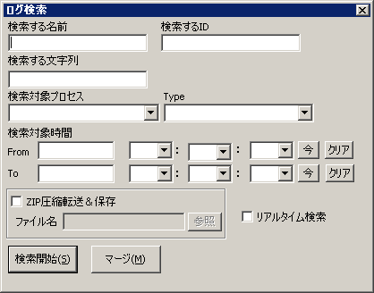

[トップ] [変更履歴]
[目次] [用語] | [AdmCli]
[ADMSV] [RSV]
| [VCE-Log] [VCEモニター]
ログ検索ウィンドウ
各プロセスが生成するログをこのウィンドウから grep like に検索する事が出来ます。
対象ログは、Admcli Standard Log Format
に従っているログのみです。

ウィンドウの説明
- 検索する名前
- 検索対象の名前（キャラ名など）を入力します。完全一致検索です。
- 検索するID
- 検索対象のID(ユーザーIDなど)を入力します。完全一致検索です。
- 検索する文字列
- 検索する文字列を指定します。log format の自由文字列部分を検索します。
名前、ID、文字列はどれか１つは指定しなければなりません。
- 検索対象プロセス
- 検索対象プロセスを指定します。コンボボックスのドロップダウンリストに指定可能なプロセスが入力されています。（必須）
- Type
- 検索対象のlog のtypeを指定します。それぞれのプロセスで指定可能なtypeがコンボボックスのドロップダウンリストに入力されているので、それを指定してください。(必須)
- 検索対象時間
- Fromのみ を省略するとログの最初から、To を省略すると検索を開始した時間まで、 両方省略するとリアルタイム検索になります。
- ZIP圧縮転送＆保存
- 検索結果を圧縮し、ファイルに保存します。データはサーバーで圧縮され転送されます。
- リアルタイム検索
- これをチェックすると、検索対象時間が無視され随時検索となり、新しくログが入力されると即検索され、出力されます。
- 検索開始
- このボタンを押すと検索を開始し、検索結果ウィンドウが開きます。 検索結果はそのウィンドウに出力されます。
- マージ
- 複数の検索結果のログを連結して時系列にソートし、新しいウィンドウに出力します。
Copyright 2000-2005 CommunityEngine Inc. All rights reserved.